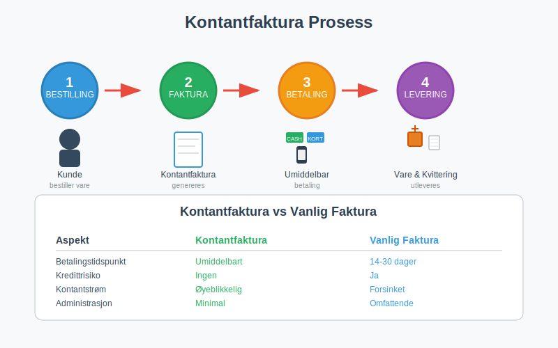
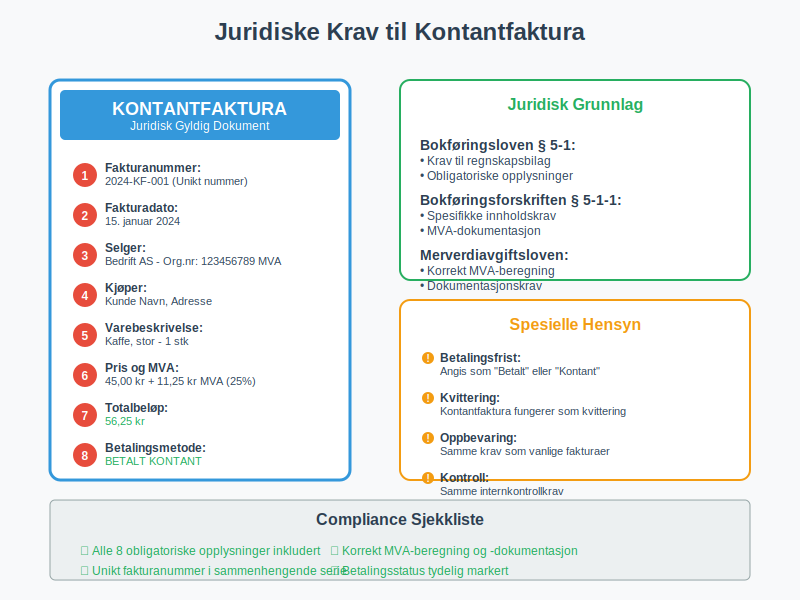
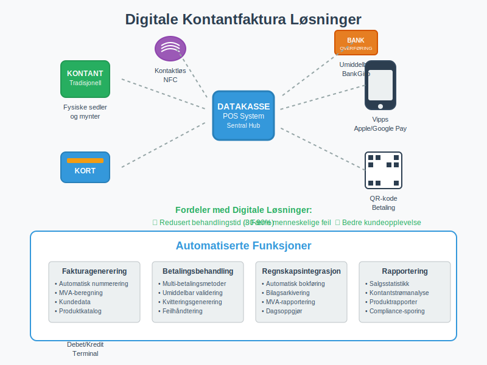
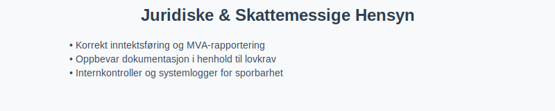

En kontantfaktura er en spesiell type faktura som krever umiddelbar betaling ved levering av varer eller tjenester. I motsetning til vanlige fakturaer med betalingsfrist, må kontantfakturaer betales på stedet, vanligvis kontant, med kort eller via mobile betalingsløsninger. Dette gjør kontantfaktura til et viktig verktøy for bedrifter som ønsker å sikre øyeblikkelig kontantstrøm og eliminere kredittrisiko.
Seksjon 1: Når Brukes Kontantfaktura?
Kontantfakturering er særlig utbredt i visse bransjer og situasjoner hvor umiddelbar betaling er ønskelig eller nødvendig. Mange bedrifter kombinerer kontantfakturering med moderne datakasse-systemer for å sikre korrekt dokumentasjon og automatisk integrasjon med regnskapssystemet. Noen virksomheter benytter også en egen kontantkasse parallelt med digital løsning for manuell kontanthåndtering.

Typiske Bruksområder:
- Detaljhandel: Butikker som selger direkte til forbrukere
- Restauranter og kafeer: Umiddelbar betaling for mat og drikke
- Servicetjenester: Håndverkere, reparasjonstjenester, og konsulenter
- Markedsstander: Salg på markeder og messer
- Transporttjenester: Taxi, buss, og andre transportløsninger
- Små leveranser: Kurertjenester og småpakker
Fordeler med Kontantfakturering:
| Fordel | Beskrivelse | Påvirkning |
|---|---|---|
| Øyeblikkelig kontantstrøm | Betaling mottas umiddelbart | Bedre likviditet |
| Eliminert kredittrisiko | Ingen risiko for tap på fordringer | Redusert behov for inkasso |
| Forenklet administrasjon | Mindre oppfølging av utestående fakturaer | Lavere administrative kostnader |
| Bedre budsjettkontroll | Umiddelbar inntektsføring | Enklere budsjettering |
Seksjon 2: Juridiske Krav til Kontantfaktura
Selv om kontantfakturaer betales umiddelbart, må de fortsatt oppfylle de samme juridiske kravene som vanlige fakturaer i henhold til bokføringsloven og bokføringsforskriften.

Obligatoriske Opplysninger:
- Fakturanummer: Unikt nummer i sammenhengende serie
- Fakturadato: Datoen for utstedelse og betaling
- Selgers informasjon: Navn, adresse og organisasjonsnummer
- Kjøpers informasjon: Navn og adresse (kan være forenklet for kontantsalg)
- Varebeskrivelse: Klar beskrivelse av solgte varer/tjenester
- Priser og MVA: Beløp med merverdiavgift spesifisert
- Totalbeløp: Samlet beløp som er betalt
- Betalingsmetode: Hvordan betalingen ble utført (kontant, kort, etc.)
Spesielle Hensyn for Kontantfaktura:
- Betalingsfrist: Angis som “Betalt” eller “Kontant ved levering”
- Betalingsreferanse: Ikke nødvendig siden betaling skjer umiddelbart
- Kvittering: Kontantfaktura fungerer ofte som kvittering
Seksjon 3: Forskjeller Mellom Kontantfaktura og Vanlig Faktura
Det er viktige forskjeller mellom kontantfakturaer og tradisjonelle salgsfakturaer som påvirker både regnskapsføring og forretningsprosesser.
Sammenligning av Fakturatyper:
| Aspekt | Kontantfaktura | Vanlig Faktura |
|---|---|---|
| Betalingstidspunkt | Umiddelbart ved levering | 14-30 dager betalingsfrist |
| Kredittrisiko | Ingen | Risiko for tap på fordringer |
| Kontantstrøm | Øyeblikkelig | Forsinket |
| Administrasjon | Minimal oppfølging | Krever debitoroppfølging |
| Dokumentasjon | Enklere prosess | Mer omfattende dokumentasjon |
| Purring | Ikke aktuelt | Kan kreve betalingsoppfordring |
Seksjon 4: Regnskapsmessig Behandling
Kontantfakturaer har en forenklet regnskapsmessig behandling sammenlignet med vanlige fakturaer, siden både salg og betaling skjer samtidig. Dette påvirker hvordan transaksjonen bokføres og hvordan den påvirker bedriftens balanse.
Bokføringseksempel for Kontantfaktura:
Debet: Kasse/Bank 12 500 kr
Kredit: Salgsinntekt 10 000 kr
Kredit: Utgående MVA (25%) 2 500 kr
Fordeler i Regnskapet:
- Forenklet bokføring: Ingen debitorposter
- Bedre likviditet: Umiddelbar påvirkning på kassebeholdning
- Enklere avstemming: Færre utestående poster å følge opp
- Redusert risiko: Ingen nedskrivning av tap på fordringer
Seksjon 5: Digitale Løsninger for Kontantfakturering
Moderne teknologi har gjort kontantfakturering mer effektiv gjennom digitale betalingsløsninger og automatiserte systemer. Mange bedrifter bruker nå elektronisk fakturering kombinert med umiddelbare betalingsmetoder.

Moderne Betalingsmetoder:
- Kortbetaling: Debet- og kredittkort via terminaler
- Mobile betalinger: Vipps, Apple Pay, Google Pay
- QR-koder: Rask betaling via mobilapp
- Kontaktløs betaling: NFC-teknologi for rask betaling
- BankGiro: For større beløp med umiddelbar overføring
Integrasjon med Regnskapssystemer:
Moderne datakasse-systemer kan automatisk:
- Generere kontantfakturaer med korrekt fakturanummerering
- Beregne MVA automatisk
- Integrere med regnskapssystem for automatisk bilagsføring
- Generere rapporter for dagsoppgjør
Seksjon 6: Utfordringer og Risikofaktorer
Selv om kontantfakturering har mange fordeler, finnes det også utfordringer og risikofaktorer som bedrifter må være oppmerksomme på.
Potensielle Utfordringer:
- Kontanthåndtering: Sikkerhet og oppbevaring av kontanter
- Tekniske problemer: Avhengighet av betalingsterminaler og internett
- Kundetilfredshet: Noen kunder foretrekker kredittid
- Større transaksjoner: Kan være upraktisk for høye beløp
- Dokumentasjon: Sikre korrekt bilagsdokumentasjon
Risikohåndtering:
| Risiko | Tiltak | Implementering |
|---|---|---|
| Kontanttyveri | Sikre oppbevaring og transport | Daglige bankinnbetalinger |
| Teknisk svikt | Backup betalingsløsninger | Alternative betalingsmetoder |
| Feil i kassaoppgjør | Dobbel kontroll og avstemming | Systematiske kontrollrutiner |
| Manglende dokumentasjon | Automatiserte systemer | Digitale kvitteringer og arkivering |
Seksjon 7: Beste Praksis for Kontantfakturering
For å maksimere fordelene og minimere risikoen ved kontantfakturering, bør bedrifter følge etablerte beste praksis-prinsipper.
Operasjonelle Retningslinjer:
- Klar prispolitikk: Tydelige priser og betalingsbetingelser
- Effektive systemer: Bruk av moderne datakasse-løsninger
- Opplæring av personale: Sikre korrekt håndtering av kontantfakturaer
- Regelmessig avstemming: Daglig kasseoppgjør og kontroll
- Backup-løsninger: Alternative betalingsmetoder ved tekniske problemer
Regnskapsmessige Rutiner:
- Umiddelbar registrering: Bokfør transaksjoner samme dag
- Korrekt MVA-behandling: Sikre riktig merverdiavgift-beregning
- Systematisk arkivering: Oppbevar alle bilag korrekt
- Regelmessig rapportering: Månedlige oversikter og analyser
Seksjon 8: Juridiske og Skattemessige Hensyn
Kontantfakturering må følge samme juridiske rammer som vanlig fakturering, men det er spesielle hensyn knyttet til kontanthåndtering og dokumentasjon.

Skattemessige Krav:
- Korrekt inntektsføring: Alle kontantsalg må rapporteres
- MVA-rapportering: Riktig behandling i MVA-meldingen
- Dokumentasjonskrav: Oppbevaring av alle kontantfakturaer
- Kontrollspor: Mulighet for å spore alle transaksjoner
Compliance og Internkontroll:
- Regelmessige revisjoner: Gjennomfør internkontroller og stikkprøver for å sikre korrekt håndtering.
- Skille funksjoner: Del ansvar for utstedelse, mottak og bokføring av kontantfakturaer.
- Systemlogger: Bruk digitale kasse- og bokføringssystemer som logger alle transaksjoner.
- Rapportering: Sørg for at oversikter over kontantsalg er tilgjengelige og dokumenterte.
| Tiltak | Beskrivelse |
|---|---|
| Daglig avstemming | Sammenligne kasseoppgjør med forventet salg |
| Autorisasjon | Definere grenser for kontantbeholdning og betalingsmodus |
| Dokumentasjonsspår | Sikre at alle kontantfakturaer og bilag er sporbare og arkiverte |
Oppsummering
Kontantfaktura gir umiddelbar likviditet og reduserer kredittrisiko, men krever strenge rutiner for dokumentasjon, internkontroll og etterlevelse av bokføringsregelverk. Ved å følge beste praksis for kontantfakturering, sikre korrekt MVA-behandling og etablere solide internkontroller, kan bedrifter dra full nytte av fordelene samtidig som de minimerer risiko.
For relaterte emner: